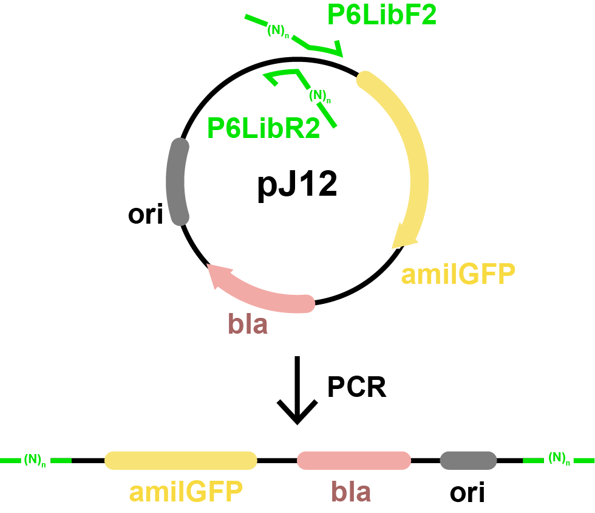

Polymerase Chain Reaction¶
In this step, you’ll perform a PCR reaction to generate a pool of DNA molecules, each containing a different variant of a synthetic promoter.
This protocol uses PrimeSTAR GXL DNA Polymerase and the PG4K45 thermal cycler program. You’ll use degenerate primers that introduce many random bases, meaning each DNA product will contain a different promoter sequence that nobody has created before you.
What You’re Doing¶
In this step, you're performing an EIPCR (Error-prone Inverse PCR) reaction using the plasmid pJ12 as a template. The goal is to replace the weak promoter in pJ12 with a library of randomized sequences using specially designed degenerate primers.
This reaction produces a linear ~3.6 kb PCR product with terminal BsaI sites, which will later be closed into a circular plasmid by Golden Gate assembly.
Primers Used¶
The primers introduce BsaI sites and randomized sequence regions. N represents a position where any base could be present. These are generated by mixing the bases during oligo synthesis.
Forward Primer (P6LibF2)¶
Reverse Primer (P6LibR2)¶
PCR around pJ12 plasmid¶

Figure: This experiment uses PCR to amplify the entire pJ12 plasmid using primers that face outward and include BsaI sites with degenerate bases. The result is a linear PCR product that still contains all original plasmid features (amilGFP, bla, ori), flanked by randomized promoter regions near each end.
The lowercase ggtctc sequence in each primer is the recognition site for the BsaI enzyme. This allows the PCR product to be seamlessly ligated back into a circular plasmid in a later step.
PCR Product Map¶
Reading the Lab Sheet¶
The PCR lab sheet is your step-by-step guide for this experiment. It has several blocks, each representing different parts of the setup process. You’ll need to read each one carefully and fill in values as you go.
Sources¶
This first table tells you which DNA tubes to fetch before beginning the reaction. You’ll get these from the pink 'Training1' box in the freezer.
| Reagent | Label | Concentration | Location |
|---|---|---|---|
| Primer (F) | F# | 10 μM | Training1/A* |
| Primer (R) | R# | 10 μM | Training1/B* |
| Template (pJ12) | T# | dil 20× | Training1/C* |
You’ll record the tube numbers from these sources and refer to them later when setting up the reaction. Be sure to write your assigned number as the label (e.g., 79) on the PCR tube cap.
PCR Samples¶
This next table shows the PCR reactions you need to set up. In this experiment, you are setting up a single reaction.
| Label | Primer 1 | Primer 2 | Template | Product |
|---|---|---|---|---|
| 79 | F# | R# | T# | 3583 bp |
- The
Labelis what you write on your PCR tube. - The
Productindicates the expected PCR product size. - You substitute the F#, R#, and T# values based on the tubes you fetched.
Reaction Setup¶
Use this table to pipette the components into your PCR tube in the order shown:
| Volume | Reagent | Tube Label |
|---|---|---|
| 32 µL | ddH₂O (white rack) | W____ |
| 10 µL | 5× PrimeSTAR GXL Buffer (green cap) | B____ |
| 4 µL | PrimeSTAR dNTP Mixture (2.5 mM each, yellow cap) | D____ |
| 1 µL | 10 µM Primer 1 (from above) | F____ |
| 1 µL | 10 µM Primer 2 (from above) | R____ |
| 1 µL | pJ12 Template DNA (from above) | T____ |
| 1 µL | PrimeSTAR GXL DNA Polymerase (cold block) | — |
After adding all components in order:
- Mix the tube by slamming on the bench.
- Briefly spin down to collect the liquid at the bottom.
- Load into the thermocycler.
PCR Program: PG4K45¶
Run the PG4K45 program. It has already been programmed into the thermocyclers, so you just need to run it. You should NOT add or edit the programs in the thermocycler. PG4K45 was designed for ~4 kb products with a 55°C annealing temperature:
Initial Denaturation: 98°C for 2 min
30 cycles:
Denaturation: 98°C for 10 sec
Annealing: 55°C for 15 sec
Extension: 68°C for 4 min
Final Extension: 68°C for 5 min
🧪 Quiz: PCR and Promoter Engineering¶
🎥 pP6-2022-1-PCR — Course Video¶
Access note: Course videos are restricted to UC Berkeley BioE 140L and iGEM students via CalNet. If you have access, you can watch the embedded player below or open it in Canvas. You can also find this item in the course Media Gallery under the title pP6-2022-1-PCR.